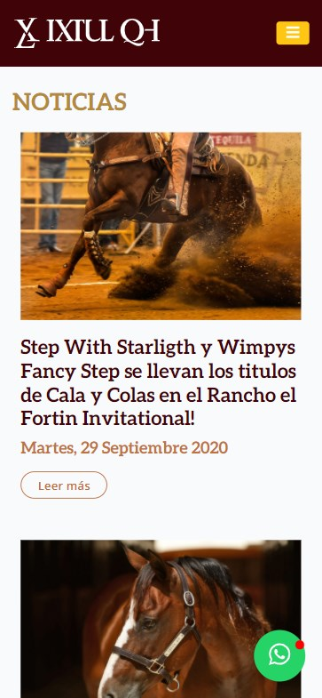

Proximity
Ixtul QH
https://ixtulqh.com/blogs
I think that this is an example of proximity, because the site, especifically in the blogs section, is grouping each blog with proximity rules, keeping the information of each post close. You can see that the title, date, link and the image are part of the same post. Also, there is a space between the posts to separate them.
Visual Hierarchy
Apple
apple.comIn this site, we can see an specific example of visual hierarchy. Whe we visit this site, the first think that we see is the iPad, then we can see the model and a brief description, to finally see the price and the option to access to more details. This is not lucky, is good design using this important principle.
White Space and Clean Design
BYU Pathway Worldwide
byupathway.org/BYU Pathway Worldwide makes an incredible use of the White space and clean design principle. Across all the site we can see the use of this important spaces to make the information clearest to show important information in short parts of the web. We can feel a sensation fo cleanest.